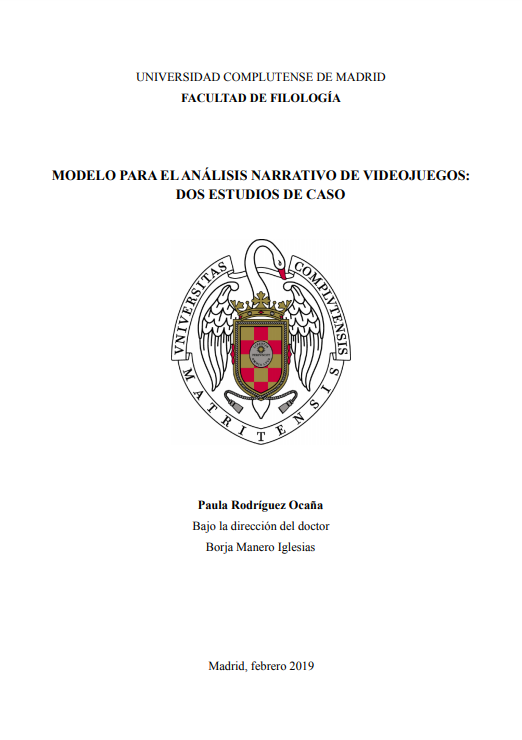

MFA Final Thesis

-
year
2019
-
motive
MA Final Thesis
My Final Thesis contains a narrative analysis schema for videogames. It contains three main fields of knowledge: literature, cyberculture and game studies, which I thoroughly studied in order to create a narrative analysis schema (previously non-existent) for the field of videogames.
My Final Thesis was graded A+ and uploaded into the university repository, so you can check it in the next link:
https://eprints.ucm.es/id/eprint/51568/Thank you!